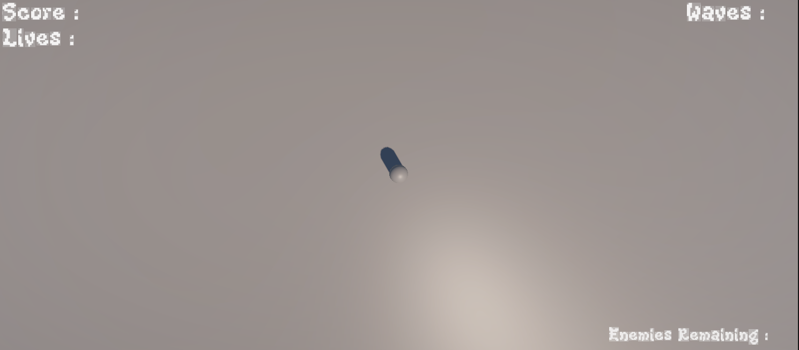
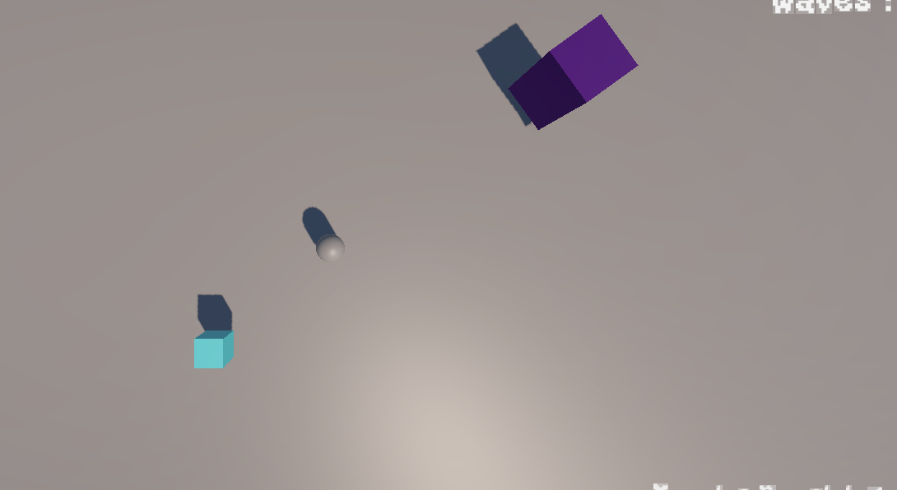
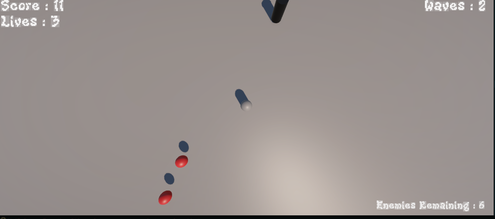
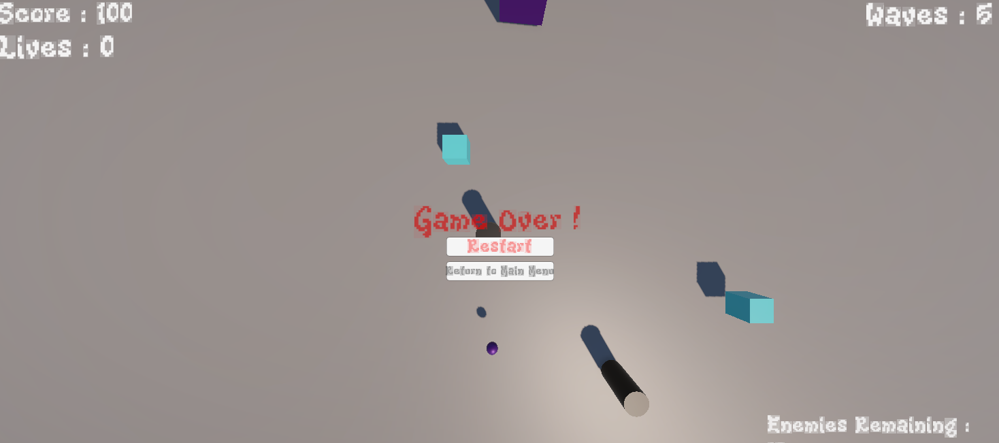

Protoype 1 (Survivor)
Pour mon premier prototype sur Unity, j'ai voulu créer un petit shooter en vue du dessus, avec des vagues infinies d'ennemis. J'ai réalisé ce projet pour le dernier rendu de projet sur la course d'Unity. Ce petit projet m'a vraiment permis d'appliquer les points que j'avais vus durant ma course sur Unity.

Ce que j'ai fait
Pour ce projet réalisé en solo, j'ai réalisé toute la partie programmation, architecture du code, les idées ainsi que l'HUD du jeu. Afin de respecter les contraintes posées par la soumission du projet, j'ai du mettre en place les grands principes de la programmation orientée objet sur l'entièreté du code, me donnant des contraintes techniques mais qui m'a permis de faire un code plus propre.
J'ai surtout appris à utiliser l'hérédité entre mes différentes classes, surtout pour les types d'ennemis présents dans le jeu, et l'implémentation d'un mini boss. Avec ce prototype, j'ai aussi mis en pratique la persistance des données en mettant un système de score dans le jeu, qui reste sauvegardé après la mort du joueur, ou si on revient sur le jeu après avoir quitté.
Avec ce projet, j'ai réussi à comprendre comment utiliser un fichier Unity intégrant les controles du joueur, en m'aidant d'une vidéo youtube et en suivant les instructions, puis en utilisant et modifiant ce que j'avais besoin pour mon jeu.
Les difficultés
Durant la réalisation de ce projet, je n'ai pas eu tant de difficultés, car j'ai pu utiliser les cours d'Unity pour me guider sur comment faire les différentes tâches à faire. Cependant les mouvements des ennemis m'ont posé pas mal de soucis, car j'ai modifié plusieurs fois, entre les mouvements de translations ou l'application d'une force sur l'ennemi. Puisque j'ai eu plusieurs problèmes avec le tracking des ennemis qui suivaient le joueur dans les airs, ce qui enlevait l'utilité du saut pour le joueur, qui est censé l'aider à esquiver les projectiles et les ennemis.
Conclusion
Pour conclure ce projet, je dirais que j'ai surtout appris à réutiliser tous les savoirs que j'ai pu voir durant ma course Unity, et la réalisation de ce prototype m'a fait comprendre le temps qu'il faut pour réaliser un vrai jeu indépendant en tant que dev solo.
J'ai pu rencontrer toutes les petites erreurs qu'on peut faire durant un projet où l'on met beaucoup de temps et d'énergie, avec les erreurs d'inattentions sur les différentes variables ou encore les liens que peuvent avoir les fichiers d'un même projet.
Mais j'ai aussi compris avec ce projet que lorsque je me sens passionné par un projet qui me tient à coeur, je peux y mettre énormément d'heures d'affilée et ne pas voir le temps passer. C'était un vrai plaisir de faire ce projet même s'il est tout petit.
Galerie


